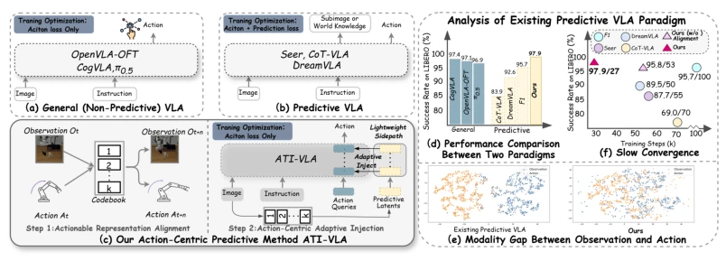
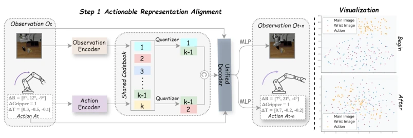
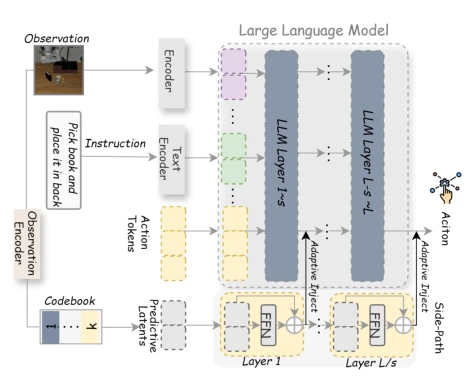
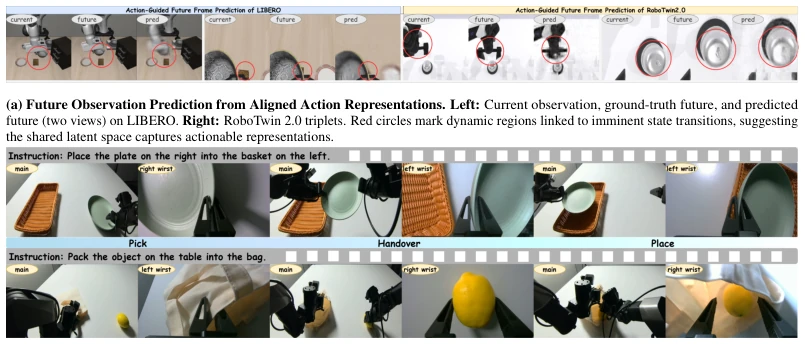
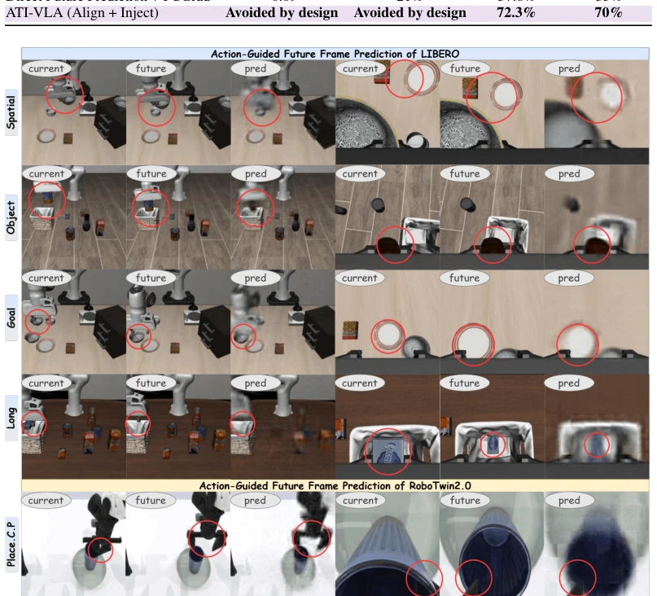
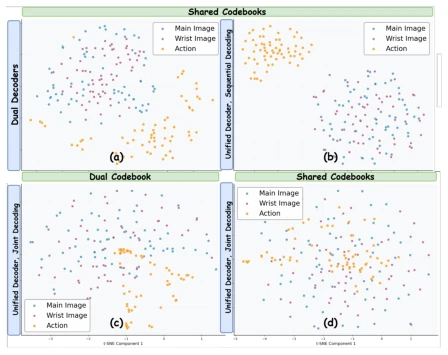
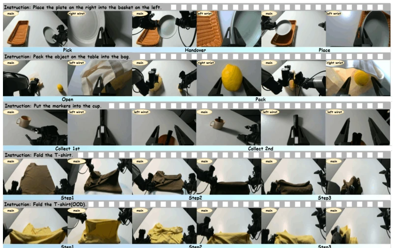

ATI-VLA attempts to 'de-grease' predictive VLA models, kicking away auxiliary tasks that are performed merely for the sake of prediction, letting the model focus solely on actions. This is like enrolling a perpetually distracted student (the prediction model) into an 'attention correction class', first having him bridge the 'language' between actions and vision (shared codebook), then sending him to the exam with a 'foresight of the future' cheat sheet (predicted latent variables), but only testing on action questions. Although it successfully pulled predictive VLA out of the awkward situation of being 'worse than direct prediction', even surpassing non-predictive baselines, but the two-stage training method of 'align then inject' sounds like asking a chef to master chopping vegetables before learning to stir-fry, steps are tedious; although the result is good, whether the process is worth spending half the training time for this slight improvement remains questionable. After all, for robots, being able to work is more important than anything else, but training costs are also real money.
Existing predictive Vision-Language-Action (VLA) models are intended to assist action generation by predicting future observations or world dynamics, theoretically should be smarter. However, the paper points out that these models often perform worse than baseline models that directly predict actions (such as OpenVLA-OFT [20] or π0 [2]). Tracing the root cause, there are mainly two fatal flaws: first is the 'modality gap', meaning the distribution of predicted visual observation latent variables does not match that of action generation latent variables, leading to prediction information failing to effectively guide actions; second is 'optimization conflict', existing methods usually simply sum prediction loss and action loss for joint optimization, causing gradient competition, not only slowing training convergence but even potentially triggering training collapse [67]. This 'want both' joint training strategy makes the model unable to truly focus on the core goal of action generation, leading prediction capability to become a mere decoration. Therefore, how to let prediction information truly serve action generation without introducing optimization conflict is a key problem that needs urgent solving.

Figure 1: Overview of VLA paradigms and motivation for ATI-VLA. Figures (a)–(c) compare general (non-predictive) VLA, predictive VLA, and our proposed action-centric predictive framework, ATI- VLA. Figures (d)–(f) identify key limitations of existing predictive VLA approaches, including observation–action modality gaps and slow convergence induced by joint optimization, which are responsible for their inferior performance relative to general VLA. By addressing these limitations, ATI-VLA enables the predictive VLA paradigm to more fully realize its potential, achieving state-of- the-art performance with faster convergence.
ATI-VLA proposes a 'Align then Inject' two-stage framework, aiming to solve modality mismatch and optimization conflict. The first stage is 'Actionable Representation Alignment'. The model utilizes a shared discrete codebook (Shared Codebook) to encode and quantize current visual observations and actions separately into the same discrete latent space. Through a unified decoder, the model simultaneously predicts future observations and actions. This step forces visual and action latent representations to 'align' in the discrete space, eliminating the modality gap, making predicted visual latent variables naturally carry action semantics. The second stage is 'Action-Centric Adaptive Injection'. Based on freezing the first stage parameters, the model injects the predicted observation latent variables learned in the first stage into the main LLM's action decoding layers via a lightweight side-path (Side-path) in an adaptive manner. To avoid over-constraining the fine control of action generation, injection does not occur at every layer, but is performed at fixed intervals (e.g., every 8 layers), utilizing cross-attention mechanisms to regulate action query tokens. Crucially, this stage only uses action loss for optimization, completely discarding prediction loss, ensuring prediction information serves only as auxiliary guidance, not interfering with the core goal of action optimization.

Figure 2: Step 1: Actionable Representation Alignment. Left: The current observation and action are encoded and vector-quantized into a shared codebook, then decoded by a unified attention-based decoder to jointly predict the future observation Ot+n and action At+n. Right: t-SNE visualization of observation (main/wrist) and action latents during training: they are initially dispersed and modality-separated, but progressively converge into an aligned shared structure after training.

Figure 3: Step 2: Action-Centric Adaptive Injection. Predictive observation latents are adaptively transformed via a lightweight side-path and injected into LLM layers to modulate action query tokens. Interval-based injection provides effective predictive guidance while preserving stable, action-centric decoding.
The paper conducted extensive tests on LIBERO and RoboTwin 2.0 simulation benchmarks, as well as Galaxea R1 Lite and AgileX Cobot Magic real robot platforms. Results show that ATI-VLA achieved SOTA ranking on LIBERO (average success rate 97.9%), significantly better than predictive models such as DreamVLA [67] and F1 [35], and also better than OpenVLA-OFT [20]. In real-world long-horizon tasks, ATI-VLA's average success rate reached 70%, far exceeding baselines. Ablation studies confirmed the effectiveness of shared codebook alignment and adaptive injection strategies: removing alignment leads to significant performance drop, while random injection of latent variables is completely ineffective. Additionally, ablation on injection frequency shows that interval injection (s=8) balances prediction guidance and action control precision better than dense injection (s=1). In terms of efficiency, ATI-VLA's training cost (16.2 hours) is only half of some baselines, and inference latency is extremely low, proving its efficiency.

Figure 5: Visualization results of the proposed method. (a) shows future observation prediction results. (b) illustrates step-by-step execution of real-world manipulation tasks.

Figure 7: Extended Future Observation Prediction from Aligned Action Representations. Additional qualitative examples of future observation prediction on the LIBERO and RoboTwin 2.0 benchmarks. Each triplet shows the current observation, ground-truth future observation, and the predicted future observation from the aligned action representation.
其他图片Other Figures

Figure 4: Ablation on Actionable Representation Alignment Strategy. t-SNE of observation/action la- tents under different alignment strategies: (a) dual de- coder, (b) sequential decoding, (c) dual codebook, (d) our method (shared codebook + joint decoding).

Figure 8: Extended Step-by-Step Real-World Task Execution. Further visualization of all real- world tasks. Each frame captures a critical stage in the sequential execution.